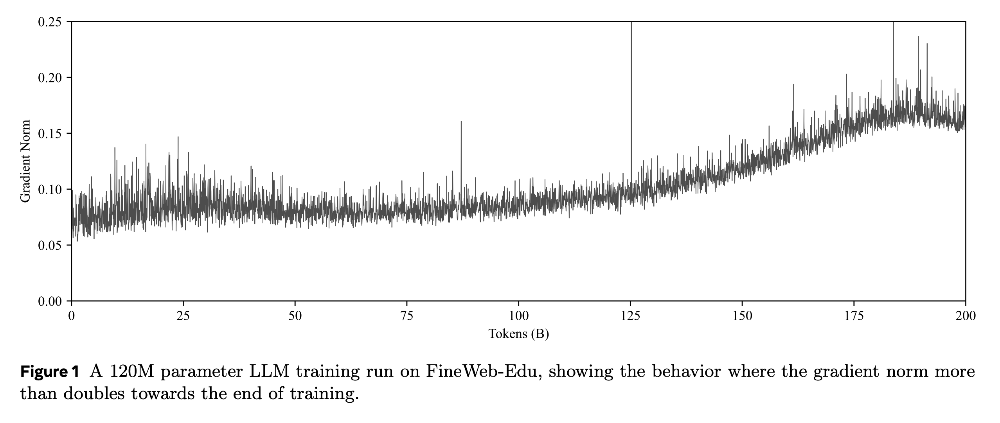
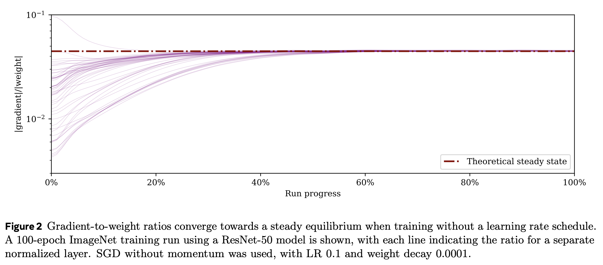
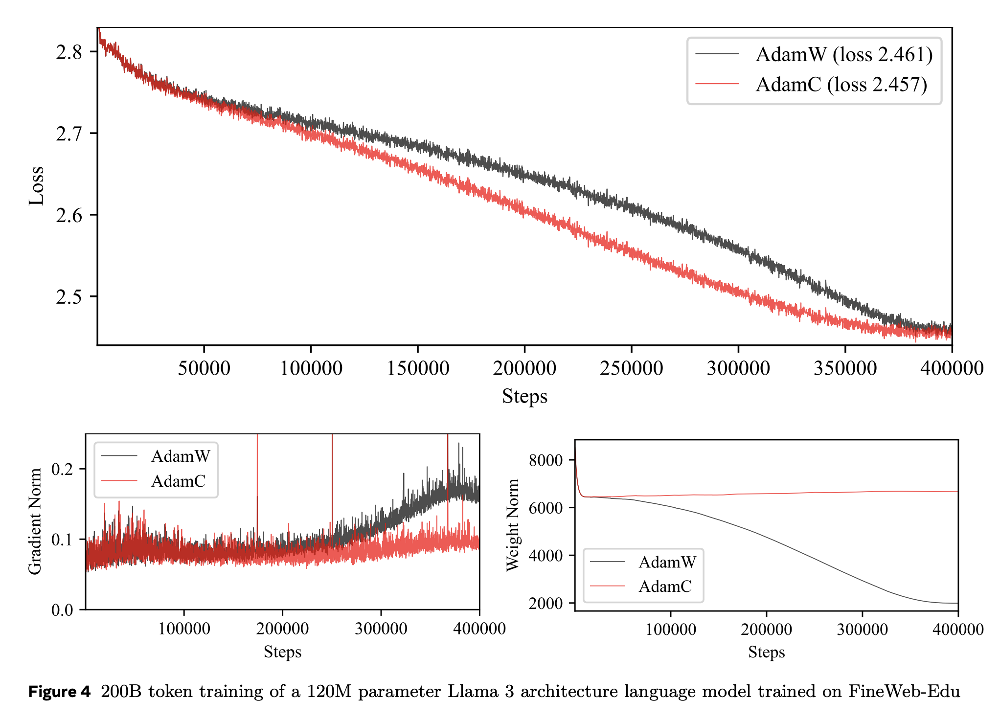
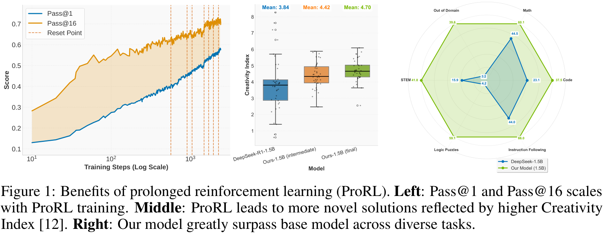
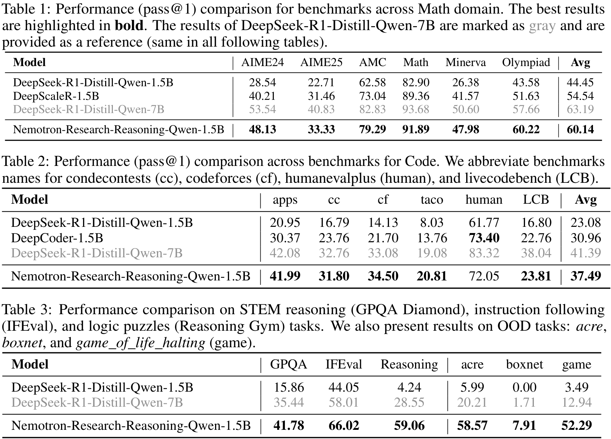
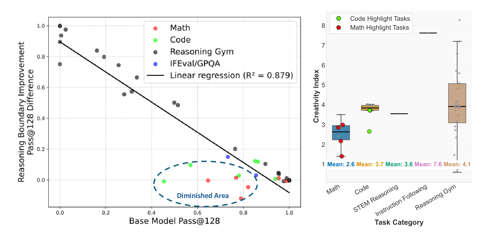
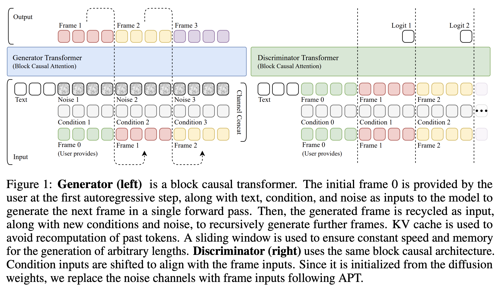
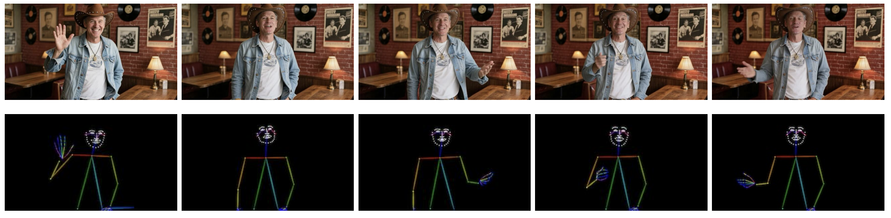
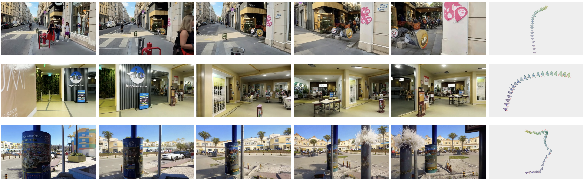

June Papers: Gradient Norms, LLM Reasoning and Video Generation
This June not only brought us very hot and sunny days (at least here in the UK), but also an excellent selection of new and exciting ML research! Out of the many good candidates, this month we selected three papers, covering quite a lot of different ground.
In the first paper, Why Gradients Rapidly Increase Near the End of Training, a researcher from FAIR explores the puzzling phenomenon of increasing gradient magnitudes during training, offering an elegant mathematical explanation and a simple remedy.
Next, in ProRL, NVIDIA researchers dive into the evolving topic of large language model reasoning, showing how prolonged reinforcement learning can indeed introduce novel reasoning abilities.
Finally, we look at AAPT, a fresh approach from the ByteDance Seed team that turns pre-trained offline diffusion models into real-time video generators via adversarial post-training.
We hope you enjoy this month's papers as much as we did! If you have thoughts or questions, please reach out to us at @GCResearchTeam.
Why Gradients Rapidly Increase Near the End of Training
The key idea
When training machine learning models in low precision, it is important to ensure that none of the values in the computations overflow the range of the format you are using, lest the process crash. Even if all of the values are kept in the representable range, the training may perform better if the values stay in the region with the best signal-to-noise ratio for a given floating-point format. For this reason, it is ideal that the norms of the activations, gradients and weights stay within a certain range throughout training.
However, it has been observed that in some long training runs the norm of the gradient vector increases rapidly towards the end of training. For example, in the training run in Figure 1, the norm of the gradient vector roughly doubles towards the end of training.
The paper shows that this is due to the interaction between weight decay, normalisation layers, and the learning rate schedule, proposing a simple correction to fix this undesired behaviour.

Theory
We can see why the gradient norm increases by considering the steady state dynamics of a single layer of the model. In particular, we consider linear layers that are immediately followed by a normalisation operation such as RMSNorm or LayerNorm. The key property that these layers have is that their gradients are orthogonal to their weights, that is, their dot product is 0. We denote the weights of a given layer at timestep \(t\) by \(x_t\), its gradient by \(g_t\), the learning rate at this point in the schedule by \(\gamma_t\), and the weight decay by \(\lambda\). By considering a single SGD step with weight decay, we have:
Further assuming that $ \lambda^2 \gamma_t^2 \ll 2 \lambda \gamma_t$ and that this term can be ignored, we have:
In a typical learning-rate schedule, the learning rate is decayed to 0 or to a small fraction of the maximum learning rate, so we expect the ratio $ \left| g_t \right| / \left| x_t \right| $ to increase rapidly towards the end of training. A similar argument, though a more approximate one, gives a similar result for Adam.
This behaviour can be seen clearly in a training run for ImageNet with SGD.

This issue can be addressed by making the weight decay proportional to the learning rate in accordance with the learning rate schedule.
Then we have:
Practice
This is a lovely theoretical result, but many modern LLM architectures (e.g., Llama) don't actually have many linear layers immediately followed by normalisation. Instead, normalisation is typically applied after adding the input to the previous layer (i.e. after the residual connection). The argument might still hold water anyway: almost all pairs of vectors in very high-dimensional Euclidean space are nearly orthogonal, so one may argue that it is still fine to neglect the $ \left\langle x_t, g_t \right\rangle $ term.
The paper shows that applying this correction to pretraining a Llama model with AdamW (calling the resulting optimisation algorithm AdamC) stabilises the norms of the gradients and the weights, as well as giving a lower loss throughout training.

In conclusion, this method is a promising way to control the norms of the gradients throughout training, and may be a key component of low-precision model training in the future.
ProRL: Prolonged Reinforcement Learning Expands Reasoning Boundaries in Large Language Models
The key idea
Reinforcement learning (RL) has had a resurgence in LLMs with application to reasoning models. However, contention remains regarding whether RL expands capabilities or simply amplifies high-reward outputs already learned. In ProRL, the authors from NVIDIA argue for the former. They find examples in which RL-trained models outperform even pass@k evaluations with large k—i.e., when the original model is given many attempts. This is achieved via prolonged RL training, suggesting that RL training scales effectively with increased compute.

The model weights are released to support further research: https://huggingface.co/nvidia/Nemotron-Research-Reasoning-Qwen-1.5B.
Background
Recent reasoning-focused LLMs, like OpenAI-o1/o3 or DeepSeek-R1, require significant inference-time compute, often driven by long chain-of-thought (CoT) strategies. RL is proposed to improve the inherent reasoning abilities, instead of simply throwing more compute. The authors posit that negative conclusions from prior attempts stem from methodological limitations, rather than fundamental RL ones:
- Overreliance on specialised domains (e.g., maths) where models are often overtrained during pre- and post-training phases, restricting the potential for exploration.
- Premature termination of RL training before models can explore and develop, typically no more than hundreds of steps.
Their method
The authors introduce ProRL to address these constraints. It enables extended RL training across diverse tasks, which they hypothesise is crucial for generalisation. With this, they develop Nemotron-Research-Reasoning-Qwen-1.5B, which the authors argue is the best performing 1.5B reasoning model. It significantly outperforms its base, DeepSeek-R1-1.5B, and matches or even surpasses DeepSeek-R1-7B across a diverse range of benchmarks.
Group Relative Policy Optimisation (GRPO) is utilised, with a couple of variations addressing entropy collapse and instability via a KL penalty and periodic resetting.
Results
The base model, from which the prolonged RL training is initiated, is DeepSeek-R1-1.5B. They find significant improvement over the baseline, and even compete with the 7B version:
+15.7% on maths; +14.4% on code; +25.9% on STEM, +22.0% on instruction following; +54.8% on text-based logic puzzles from Reasoning Gym.
It also surpasses the maths- and code-specialised baselines DeepScaleR and DeepCoder by +4.6% and +6.5%, respectively. Full details are given in the evaluation table below.

This demonstrates the value in their prolonged training; see Figure 1 above. It does not however address generalisation. To this end, the model is evaluated on three out-of-distribution benchmarks: acre, boxnet and game_of_life_halting: it performs very well on all of these, far exceeding even the 7B version.
Their study finds that the effectiveness of RL in improving reasoning (measured by pass@128) is strongly influenced by the initial capability. Specifically, when the model already performs well, little is gained; when it initially performs poorly (even completely failing), a marked increase can be observed.

Takeaways
The paper provides compelling evidence that RL truly can expand LLM's reasoning abilities, not just improve their extraction. This is achieved by incorporating KL penalties and periodic reference-policy resets during an extended RL training period. It culminated in a state-of-the-art 1.5B reasoning model which performs well on several benchmarks, indicating its generalist properties.
Autoregressive Adversarial Post-Training for Real-Time Interactive Video Generation
Real-time interactive video generation requires (1) low latency (ideally frame generation requires a single model evaluation) and (2) the model can only use past frames to generate the current frame (autoregressive generation).
Meanwhile, there exist many models that generate video offline, without real time user input. For example, diffusion models have shown great results in image generation, and naturally, by stacking a fixed number of frames of a video together, e.g. 24fps x 5s = 120 frames, one may train a diffusion model that generates all the frames together. Effectively the temporal dimension becomes just another arbitrary axis in the generated data tensor.
However, diffusion models require multiple denoising steps, which introduces latency. In the case of video, if all frames are generated simultaneously, early video frames are generated together with later ones, effectively allowing them to "see the future".
The key idea
This work proposes a new method to convert an offline, expensive video diffusion model into a real-time interactive model. While not the first to do so, the authors use a GAN-style generator and discriminator pair and claim to achieve: - lower latency: 0.16s per frame - lower compute: 736×416 at 24FPS on a single H100, 1280×720 on 8 x H100 - longer video length: up to 1440 frames, 60s at 24fps

Background
A video may be represented as a tensor \(X\) with shape \((T, C, H, W)\): this is first passed through a pretrained 3D VAE yielding \(X'\) with smaller shape \((T', C', H', W')\), where each latent time step equates to four real frames. Subsequent modelling happens in the latent space and at inference time each latent frame may be decoded in real time.
A Video Diffusion transformer model takes 3 inputs: - text token embeddings - tokenised noisy video \(X'\) - diffusion timestep \(t\)
and passes this information through transformer layers that include full bidirectional attention over video time steps (past frames attend to future frames) and the output is a tensor of the same shape as \(X'\) that may be a denoised image or just the noise component of the input.
Their method
Given a video diffusion model the following recipe can be applied:
-
Make the model autoregressive: replace bidirectional attention with causal attention, i.e., each frame can only attend to the text tokens and past frame tokens. This enables the use of KV caching, speeding up inference.
-
Add previous frame as input: the model input for a single (noisy) frame \((1, C', H', W')\) is augmented with the (clean) previous frame through channel concatentation \((1, 2C', H', W')\) — the model is "denoising" the previous frame to the next one.
-
Diffusion adaptation: after making the above changes, one must train the modified architecture using teacher forcing: true frames are used as input to predict true next frame (similar to the standard transformer decoder training).
-
Consistency distillation: the model is trained to predict the final denoised imaged in one-shot, reproducing the result of running multiple denoising steps.
-
Make a discriminator: the discriminator is a new model that uses the same causal architecture as the generator, except that the prediction for each frame is a single logit initialised from the generator after the adaptation in step 3.
-
Train adversarially: the recent R3GAN objective aims to remove the need for the many ad-hoc tricks that GAN methods used to require and is used here to train the generator and discriminator. The generator uses student forcing: starting from one true initial frame, it autoregressively generates each new frame using its own generated previous frame. This reflects inference time usage and significantly reduces error accumulation enabling longer video generation.

Results
The authors take an 8B-parameter pretrained Video Diffusion Transformer model, from which an 8B generator and 8B discriminator are constructed and trained. The main paper contains metrics on VBench-Competition (the qualitative results are shown here).
Qualitative Comparison to Baselines
The authors argue that the student forcing and adversarial training specifically enable longer video generation, which is why baseline methods struggle to generate longer video beyond their training data. However AAPT (bottom) which has a discriminator that can judge any 10 second window of a 60-second video enables the generator to produce longer videos.

Human Poses
Given an initial frame and a user input sequence of human body poses, create a video of a person moving in real time.

Camera Control
Given an initial frame and a user input sequence of camera orientations, generate a video of what the camera would see as it moves.

Takeaways
- Pre-trained offline diffusion models can be converted to online video generators.
- GANs are not dead! Adversarial training can really work and enables longer video generation.